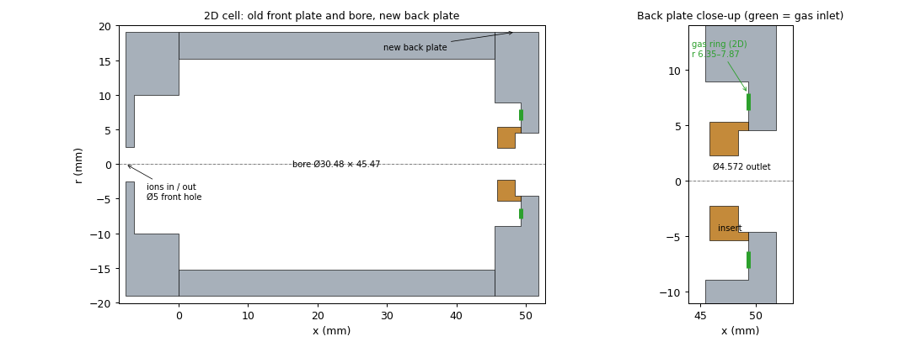

Front plate and bore as in the earlier 2D scans; the back plate is replaced by the one in
Neutralizing_cell_new_inlet.step (sizes read from the file, mm). x = 0 is the inner face of the front plate.

| New back plate | mm |
|---|---|
| Plate | 6.35 thick (x 45.47–51.82) |
| Recess on the cell side | Ø17.78, 3.81 deep |
| Centre insert | Ø10.67 outside, tip 0.38 short of the plate face |
| Outlet aperture (in the insert) | Ø4.572 × 2.54, then Ø9.144 out through the plate |
| Gas gap | ring between Ø10.67 and Ø17.78, 3.43 long |
| Gas hole | one Ø1.524 hole, 7.11 off axis, into the gap floor |
2D treats the cell as a solid of revolution, so the one gas hole has to become a ring. Proposed: a ring at the floor of the gas gap, with the hole's width (green: r 6.35–7.87, x 49.28), blowing toward the cell. The flow (SCCM) is set directly, so the ring's size does not change how much gas comes in. The gap spreads the gas around the axis before it reaches the cell, so the ring should be a fair stand-in for the single hole. Other options: the whole gap floor (r 5.33–8.89), or a ring with the hole's area (0.04 mm wide, too thin for the grid).